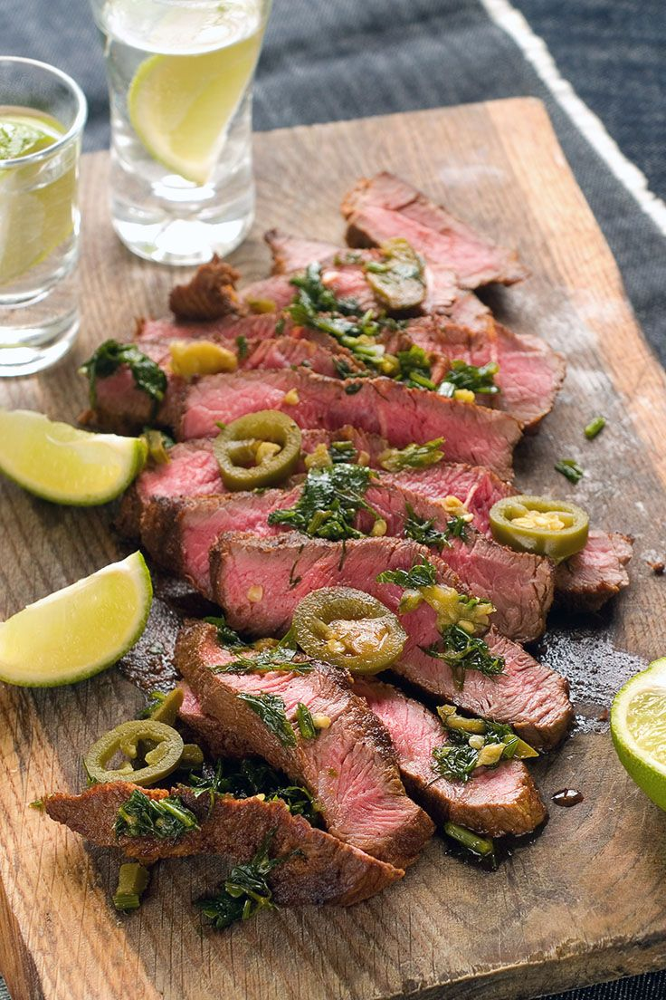

The Jalapeno Steak

Jalapeno Sauce Steak
Jalapenos mixed with the other ingredients give a spicy and delicious kick to grilled steak. Marinate this steak in the fridge for up to 24 hours before cooking.
Ingredients:
- 4 jalapeno peppers, stemmed
- 4 cloves garlic, peeled
- 1 tbsp. coarse salt
- 1/4 cup lime juice
- 1 tbsp. dried oregano
- 1 1/2 pounds top sirloin steak
Steps:
- Combine jalapenos, garlic, pepper, salt, lime juice and oregano in a blender. Blend until smooth.
- Place steak in a shallow pan or large resealable plastic bag. Pour jalapeno marinade over the steak, and turn to coat. Cover pan or seal bag; marinate in the refrigerator 8 hours or overnight.
- Preheat an outdoor grill for high heat, and lightly oil the grill grate.
- Drain and discard marinade. Grill steak 5 minutes per side, or to desired doneness.
Enjoy your meal, BRUH!